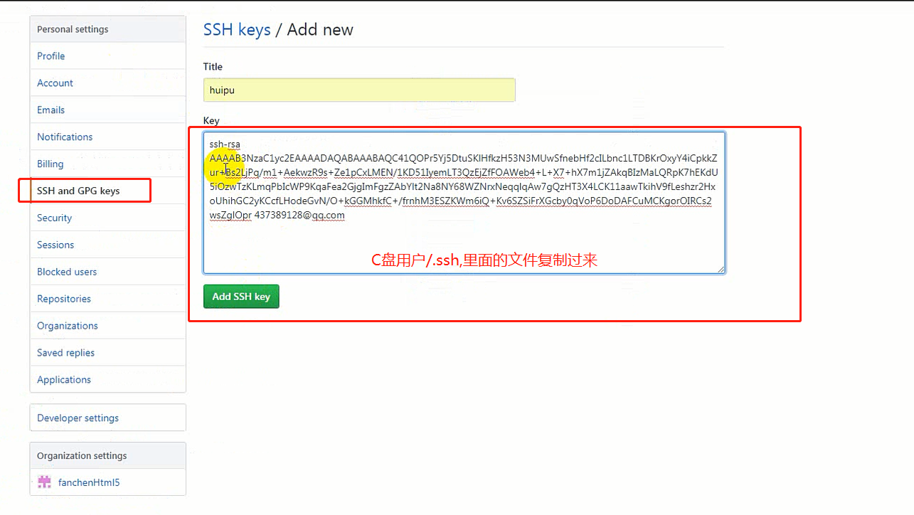

1.初始化仓库，创建git仓库
git init------管理文件
2.配置个人信息（一个电脑只需要配置一次就好）
git config --global user.name "用户名"
git config --global user.email "邮箱"
git config --list=============(查看配置信息)
git config --global user.name======查看用户名
git config --global user.email=====查看邮箱
3.查看文档配置信息（管理的文件）
git status
(注：文件红色是指文件是新添加和被改动过的)
4.将工作区添加到缓存区（修改之后走这一步）
git add .
5.从暂存区添加到版本库（修改之后走这一步）
git commit -m "第一次提交"
6.查看提交的版本日志，谁提交提交的什么
git log
（版本号：
作者：
时间：）
7.如果想修改之前的版本，回退到之前版本
git reflog
(拿到前六位版本号)
git reset --hard 拿到的六位数版本号
(回退到指定的版本库，但是其他的版本不会被删除)
8.比较工作区和版本库里面代码的不同
git diff master
9.比较暂存区和版本库里面代码的不同
git diff --cached
10.工作区和暂存区的比较
git diff 工作区名称
11.删除暂存区或分支上的文件，同时工作区也不需要这个文件
git rm 文件名称
git rm -f 文件名称 （强制删除）
删错了可以回退版本
12.克隆
git clone 仓库地址
13.分支
查看所有分支：git branch
创建分支：git branch 分支名称
切换分支：git checkout 分支名称
创建并切换：git checkout -b 分支名称
14.获取密钥，并查看密钥
ssh-keygen -t rsa -C "邮箱名称(随便写)"
（一直回车）
15.流程
1.创建一个仓库
2.创建名字和描述，复选框勾选，自动创建配置
3.点击设置settings,添加合作者（需同意）

1.克隆线上仓库名称 ssh
2.构建项目（node要删除）
3.进入克隆下来的文件夹git add . 上传创建好的项目
4.git commit -m "项目初建"//将修改从暂存区提交到本地版本库
5.git push===>提交到线上（组长）
6.组员：1.git clone 地址 +文件夹名字(不与线上相同) ====>代表线上拉下来放到的文件夹
2.进入到组员文件夹 创建分支 git checkout -b 分支名称 //切记不在主分支修改（组员自己下载到自己的本地文件夹也必须要创建子分支做修改）
3.在分支上修改之后 git add . //提交暂存区
git commit -m "修改bug" //提交到版本库
4.第一次提交到线上的时候做一次，创建线上分支git push --set-upstream origin 分支名称
7.组长合并：进入到项目的主分支操作（最好半天一合并和一天一合并）(修改代码在分支，合并在主分支)
git fetch （拉下组员改动的最新的文件）
git branch(可能查不到分支名称，可省略不做)
git checkout 分支名称（直接切组员分支）
git checkout master (切换到主分支)
git merge 组员分支名称（将子分支合并到主分支）
git add .
git commit -m "最新提交"
git push (提交到线上)
8.如有多个组员，每天第一件事就是把前一天别的组员上传上去的更新的代码同步
在组员的本地文件切换到组员的主分支 git pull
拿到更新的新的数据然后回到子分支工作git checkout 组员的子分支，并将主分支和子分支合并git merge master